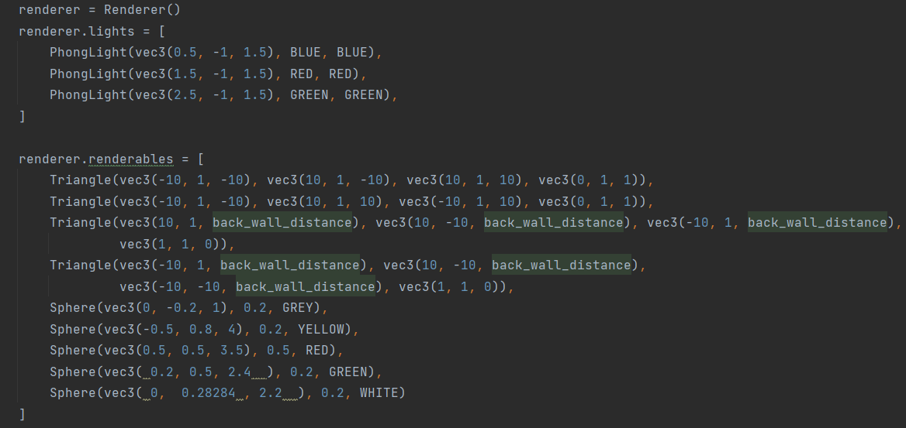

Ray Casting and Rendering with Geometric Objects
Overview:
I created a renderer capable of handling input geometric objects and light sources, and subsequently outputting a rendered image. The objects were presented in code format, like:

Technical Details:
- Coordinate System: The graphics application utilized a right-handed coordinate system. Here, the x-axis ran from left to right, y-axis pointed downwards, and the z-axis, rather uniquely, pointed into the screen. This positioning implies the viewer faces positive z.
- Rendering Process: For every pixel, a ray was cast from the camera, pinpointing the first intersection it made with the scene's geometry. The pixel's color was determined by the interplay of given light sources at the point of intersection and in accordance with the Phong Lighting Model.
- Implementation & Results: Utilizing the Phong Lighting Model, an advanced technique in computer graphics, the project achieved realistic shading effects for both the triangle and sphere. This model provides an empirical model of local illumination, lending to the visual depth and nuanced lighting details in the final render.
Outcome:
The outcome, a rendered image of intricate geometric shapes with realistic lighting, stands as a testament to the robustness of the implemented techniques and the potential of ray casting in computer graphics.